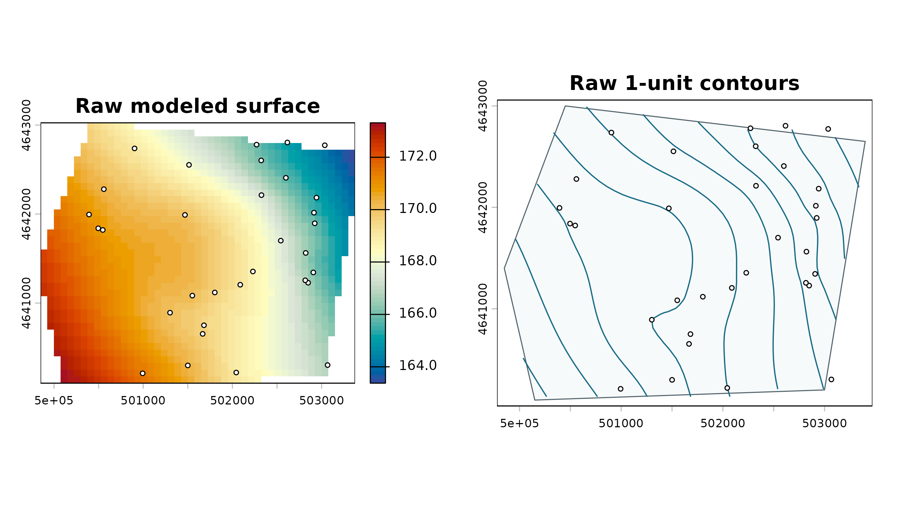
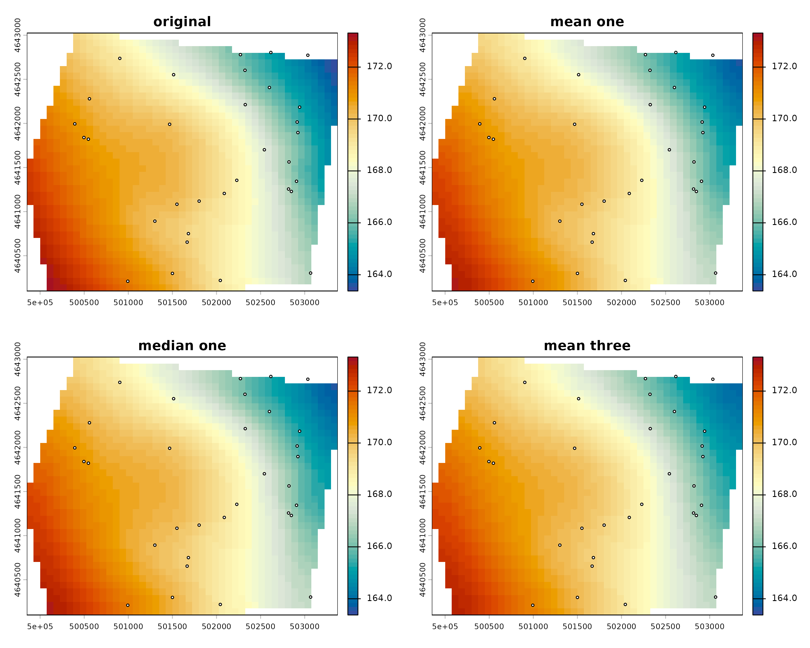
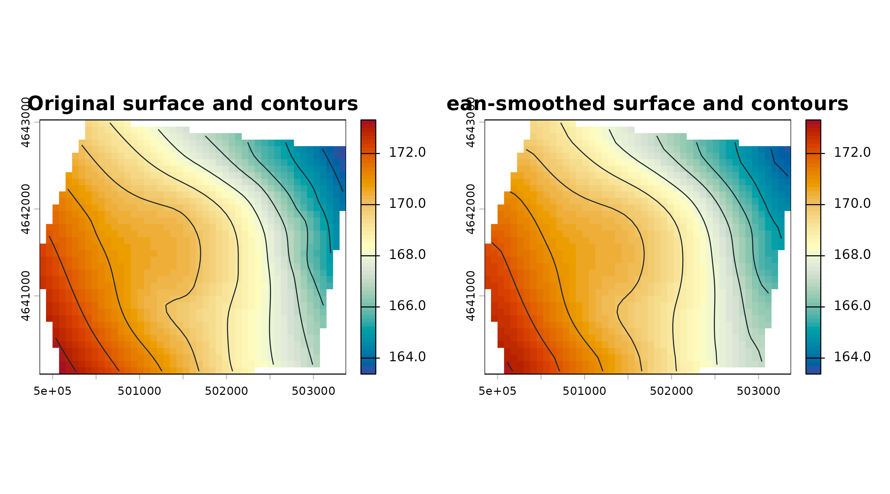

Contours and surface smoothing
contours-smoothing.RmdRegular intervals and explicit levels
regular <- ps_contours(surface, interval = 1)
explicit <- ps_contours(surface, levels = c(166, 168, 170))
data.frame(
contour_set = c("1-unit interval", "explicit 166, 168, 170"),
line_features = c(nrow(regular), nrow(explicit)),
attributes = c(paste(names(regular), collapse = ", "),
paste(names(explicit), collapse = ", "))
)
#> contour_set line_features attributes
#> 1 1-unit interval 10 level
#> 2 explicit 166, 168, 170 3 level
par(mfrow = c(1, 2), mar = c(3, 3, 3, 1))
plot(surface, col = cols, main = "Raw modeled surface")
plot(points, add = TRUE, pch = 21, bg = "white", cex = .6)
plot(ps_sample_aoi(), col = "#f7fafb", border = "#52646d", main = "Raw 1-unit contours")
plot(regular, add = TRUE, col = "#176b87", lwd = 1.2)
plot(points, add = TRUE, pch = 21, bg = "white", cex = .6)
Mean and median smoothing
mean_one <- ps_smooth_surface(surface, window_size = 5, method = "mean", iterations = 1)
median_one <- ps_smooth_surface(surface, window_size = 5, method = "median", iterations = 1)
mean_three <- ps_smooth_surface(surface, window_size = 5, method = "mean", iterations = 3)
data.frame(
surface = c("original", "mean one pass", "median one pass", "mean three passes"),
minimum = vapply(list(surface, mean_one, median_one, mean_three), function(x) minmax(x)[1], numeric(1)),
maximum = vapply(list(surface, mean_one, median_one, mean_three), function(x) minmax(x)[2], numeric(1)),
standard_deviation = vapply(list(surface, mean_one, median_one, mean_three),
function(x) global(x, "sd", na.rm = TRUE)[[1]], numeric(1))
)
#> surface minimum maximum standard_deviation
#> 1 original 163.3753 173.3123 2.136488
#> 2 mean one pass 163.6815 173.0601 2.108176
#> 3 median one pass 163.6818 173.0599 2.108895
#> 4 mean three passes 163.8872 172.9443 2.079714
all_surfaces <- list(original = surface, mean_one = mean_one,
median_one = median_one, mean_three = mean_three)
shared <- range(unlist(lapply(all_surfaces, minmax)), finite = TRUE)
par(mfrow = c(2, 2), mar = c(3, 3, 3, 1))
for (nm in names(all_surfaces)) {
plot(all_surfaces[[nm]], col = cols, range = shared,
main = gsub("_", " ", nm))
plot(points, add = TRUE, pch = 21, bg = "white", cex = .5)
}
mean_contours <- ps_contours(mean_one, interval = 1)
par(mfrow = c(1, 2), mar = c(3, 3, 3, 1))
plot(surface, col = cols, range = shared, main = "Original surface and contours")
plot(regular, add = TRUE, col = "#17252d")
plot(mean_one, col = cols, range = shared, main = "Mean-smoothed surface and contours")
plot(mean_contours, add = TRUE, col = "#17252d")
data.frame(
object = c("original", "smoothed"),
missing_cells = c(global(is.na(surface), "sum")[[1]],
global(is.na(mean_one), "sum")[[1]]),
same_geometry = c(TRUE, compareGeom(surface, mean_one, stopOnError = FALSE))
)
#> object missing_cells same_geometry
#> 1 original 255 TRUE
#> 2 smoothed 255 TRUESmoothing changes the modeled surface; it is not an accuracy correction. Retain the unsmoothed result, record the method, window, and number of passes, and review whether local variation is being obscured. Contours derived from a smoothed raster describe that smoothed model, not the original interpolation.